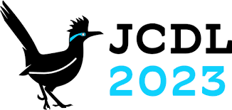
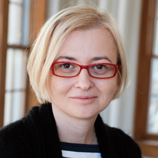

IMSC2023-Workshop
Innovation Measurement for Scientific Communication (IMSC) in the Era of Big Data
Santa Fe, New Mexico, USA
June 29, 2023
Call for Papers
You are invited to participate in the 1st Workshop on Innovation Measurement for Scientific Communication (IMSC) in the Era of Big Data, to be held as part of the ACM/IEEE Joint Conference on Digital Libraries 2023, Santa Fe, New Mexico, June 29, 2023 (JCDL2023).
Purpose of the Workshop
The increasingly mature artificial intelligence technologies, such as big data, deep learning, and natural language processing, provide technical support for research on automatic text understanding and bring development opportunities for innovative measurement of scientific communication. Innovation measurement in scientific communication is a challenging and cutting-edge direction in Informetrics. It is interdisciplinary, requiring considering the characteristics of different disciplines and different types of scientific outcomes to establish a comprehensive evaluation metrics system. On the other hand, metadata and content features should be considered to reflect the innovation of scientific works objectively and comprehensively. This workshop focuses on the discussion and produces enlightening outcomes. We will engage broad audiences to share their ideas and pre-productions, enabling an interdisciplinary approach to exploring frontier areas. This workshop consists of keynotes, oral presentations, and poster sessions and would attract interest from academic researchers, librarians, and decision-makers from governments and practical sectors.
Science innovation and breakthroughs are the key driving force for scientific and technological advances. Measuring and tracking these innovative studies is an essential direction in informetrics and Science of Science. In the big data era, the development of informatics is full of risks and opportunities. A large number of papers is published, but it is challenging to automatically identify and track innovative publications because of their scarcity. Advancement of artificial intelligence, in particular natural language processing and knowledge reasoning, provides potential solutions, using large-scale pre-trained language models, knowledge graphs based on scholarly communication and using full-text analytics to extract and evaluate knowledge entities [4,5]. As stated in the Leiden Manifesto [1], quantitative evaluation should support qualitative, expert assessment. Both qualitative and quantitative methods have been proposed to measure the innovativeness of knowledge in science communication. For example, Zhang et al. used network analysis to characterize emerging technologies [7]; Luo et al. measured the originality or novelty of scholarly articles based on combinatorial novelty theory [2]; Savov et al. applied topic models and bibliometric features to identify highly cited papers or breakthrough papers [3]. Meanwhile, Wu et al. proposed a revised architecture, enhanced hardware, and software infrastructure for digital library to manage scholarly big data [6]. Identifying the main factors of science and developing predictive models to capture its evolution provides a broader perspective on measuring the innovative nature of science. Therefore, we propose this workshop to gather researchers and practical users to initiate a collaborative platform for exchanging ideas, sharing pilot studies, and scoping future directions on this cutting-edge venue.
Topics of Interest
Topics of interest include, but not limited to the following:
- º Innovation theory for research contribution identification in academic paper
- º Evaluation of technological innovation performance of research organizations
- º Evaluation of innovation management ability of research organizations
- º Theory and framework for innovation measurement
- º High-quality and reusable dataset for knowledge extraction and innovation measurement
- º Innovation measurement with natural language processing, machine learning (including deep learning)
- º Innovation measurement with other related techniques
- º Knowledge element extraction from academic big data
- º Feasible and effective evaluation metrics for innovation measurement
- º Radical and incremental innovation measurement
- º Multi-information fusion for innovation measurement
- º Innovation diffusion models for scientific communication
- º Applications of innovation measurement for scientific communication
- º Innovation diffusion models for scientific communication
- º Innovation evolution models for scientific communication
- º Interdisciplinary radical innovation measurement
- º Interdisciplinary radical innovation diffusion for innovation measurement
Submission Information
Regular papers: All submissions must be written in English, following the ACM Proceedings template (10 pages for full papers and 4 pages for short papers exclusive of unlimited pages for references) and should be submitted as PDF files to EasyChair.
Poster & demonstration: We welcome detailed originality, early discoveries, work-in-progress and industrial applications of innovations in measurement science communication to be presented in special poster sessions, and possibly in 2-minute presentations in the main session. Some research track papers will also be invited to the poster track instead, although there will be no difference in the final proceedings between poster and research track submissions. These papers should follow the same format as the research track papers but can be shorter (2 pages for poster and demo papers).
All submissions will be reviewed by at least two independent reviewers. Please be aware of the fact that at least one author per paper needs to register for the workshop and attend the workshop to present the work. In case of no-show the paper (even if accepted) will be deleted from the proceedings and from the program.
Expected Outcomes
Outcomes of this workshop will include:
- º The accepted papers and posters will be published in CEUR Workshop Proceedings.
- º All the accepted papers and posters will be invited to submit an extended version to The Electronic Library special issue on IMSC. The special issue has been approved, and around 10 papers will be included to the special issue. We expect the special issue to call for submission in the late of 2023 and be published in the middle 2024.
Important Dates
All dates are Anywhere on Earth (AoE).
Deadline for submission. May, 10, 2023
Notification of acceptance. June, 1, 2023
Camera ready. June, 20, 2023
Workshop. June, 29, 2023
Keynote
Title: Science as an engine of progress and progress of science
Abstract
: In order to help solve increasingly complex problems and questions, contemporary science has adopted new approaches to knowledge production that are predominantly team based and are less confined by disciplinary boundaries. The study of the character of and the interplay between the social, institutional and intellectual aspects of science has recently received a major boost. In this talk I will showcase some of the studies that use the data from scientific publications to shed light on contemporary research practices, research teams, research workforce, interdisciplinarity, and citation dynamics.

Prof. Staša Milojević: She is a Professor in the School of Informatics, Computing, and Engineering, the director of Complex Networks and Systems Research (CNetS), a Grant Thornton Scholar, a core faculty of Cognitive Science program, and a fellow of Rob Kling Center for Social Informatics at Indiana University, Bloomington.
Her research endeavors to elucidate the dynamics of science as a social and an intellectual (cognitive) endeavor by approaching science as a heterogeneous system comprising of people, ideas, documents, instruments, institutions, and policies situated in an historical context. Specifically, she strives to produce comprehensive, yet straightforward models based on theoretical and empirical findings from a wide range of fields (science, technology, and society (STS), science of science, information science, network science, economics, sociology, philosophy, history, etc.) in order to uncover and explain the fundamental principles that govern contemporary science.
She serves on the editorial boards of Quantitative Science Studies, Scientometrics and BioScience. She is an Associate Editor for the Frontiers in Research Metrics and Analytics and Journal of Altmetrics. She received her PhD in Information Studies at University of California, Los Angeles.
Organising Committee
 Zhongyi Wang is an associate professor of School of Information Management, Central China Normal University, China. His current research interests include knowledge extraction, science of science, knowledge organization and retrieval. He serves as PC members of several international conferences and the reviewer for 8 peer reviewed journals in information science and computer science. He has published more than 50 peer-reviewed papers.
Zhongyi Wang is an associate professor of School of Information Management, Central China Normal University, China. His current research interests include knowledge extraction, science of science, knowledge organization and retrieval. He serves as PC members of several international conferences and the reviewer for 8 peer reviewed journals in information science and computer science. He has published more than 50 peer-reviewed papers.
 Haihua Chen is an assistant professor in Data Science in the Department of Information Science at the University of North Texas. He has been involved in several NSF funded projects. He has expertise in applied data science, natural language processing, information retrieval, and text mining. He co-authored more than 40 publications in academic venues in both information science and computer science. Dr. Chen is serving as co-editor for The Electronic Library, the guest editor of Information Discovery & Delivery and Frontiers in Big Data special issues, the organizing committee of JCDL 2018, IEEE AITest 2023, ISKO international conference 2024, and several workshops. He is the reviewer for 14 peer reviewed journals and several international conferences.
Haihua Chen is an assistant professor in Data Science in the Department of Information Science at the University of North Texas. He has been involved in several NSF funded projects. He has expertise in applied data science, natural language processing, information retrieval, and text mining. He co-authored more than 40 publications in academic venues in both information science and computer science. Dr. Chen is serving as co-editor for The Electronic Library, the guest editor of Information Discovery & Delivery and Frontiers in Big Data special issues, the organizing committee of JCDL 2018, IEEE AITest 2023, ISKO international conference 2024, and several workshops. He is the reviewer for 14 peer reviewed journals and several international conferences.
 Chengzhi Zhang is a professor of Department of Information Management, Nanjing University of Science and Technology, China. His current research interests include scientific text mining, knowledge entity extraction and evaluation, social media mining. He serves as Editorial Board Member and Managing Guest Editor for 10 international journals (Patterns, Heliyon, IP&M, OIR, Aslib JIM, TEL, JDIS, DIM, DI, etc.) and PC members of several international conferences in fields of natural language process and scientometrics ( https://chengzhizhang.github.io/).
Chengzhi Zhang is a professor of Department of Information Management, Nanjing University of Science and Technology, China. His current research interests include scientific text mining, knowledge entity extraction and evaluation, social media mining. He serves as Editorial Board Member and Managing Guest Editor for 10 international journals (Patterns, Heliyon, IP&M, OIR, Aslib JIM, TEL, JDIS, DIM, DI, etc.) and PC members of several international conferences in fields of natural language process and scientometrics ( https://chengzhizhang.github.io/).
 Wei Lu is a professor of School of Information Management and director of Information Retrieval and Knowledge Mining Center, Wuhan University. He received his PhD degree of Information Science from Wuhan University, China. His current research interests include information retrieval, text mining, QA etc. He has papers published on SIGIR, Information Sciences, JASIST, IP&M. He serves as diverse roles (e.g., Associate Editor, Editorial Board Member, and Managing Guest Editor) for several journals.
Wei Lu is a professor of School of Information Management and director of Information Retrieval and Knowledge Mining Center, Wuhan University. He received his PhD degree of Information Science from Wuhan University, China. His current research interests include information retrieval, text mining, QA etc. He has papers published on SIGIR, Information Sciences, JASIST, IP&M. He serves as diverse roles (e.g., Associate Editor, Editorial Board Member, and Managing Guest Editor) for several journals.
 Jian Wu is an assistant professor of Computer Science at Old Dominion University. His research interests include natural language processing and understanding, scholarly big data, information retrieval, digital libraries, and science of science. He has published 70 peer-reviewed papers on ACM, IEEE, and AAAI venues, with best papers and nominations. He was rated the best reviewer in JCDL 2018. His homepage is at https://www.cs.odu.edu/~jwu/.
Jian Wu is an assistant professor of Computer Science at Old Dominion University. His research interests include natural language processing and understanding, scholarly big data, information retrieval, digital libraries, and science of science. He has published 70 peer-reviewed papers on ACM, IEEE, and AAAI venues, with best papers and nominations. He was rated the best reviewer in JCDL 2018. His homepage is at https://www.cs.odu.edu/~jwu/.
Program Committee
º Angelo Antonio, The Open University
º Hsia-Ching Chang, University of North Texas
º Sijing Chen, Central China Normal University
º Orduna-Malea Enrique, Universitat Politècnica de València
º Jiangen He, University of Tennessee at Knoxville
º Linlin Hou, Nankai University
º Xiao Huang, Central China Normal University
º Ying Huang, Wuhan University
º Jiang Li, Zhejiang University
º Mauro Dalle Lu, Universidade de Campinas
º Jin Mao, Wuhan University
º Chao Min, Nanjing University
º Dongin Nam, Yonsei University
º Yan Qi, Institute of Medical Information / Medical Library. CAMS & PUMC
º Feng Shi, The University of North Carolina at Chapel Hill
º Mathias Tessma, Brazilian Institute of Education
º Yang Wang, Xi'an Jiao Tong University
º Haiyun Xu, Shandong University of Technology
º Shuo Xu, Beijing University of Technology
º Jinzhu Zhang, Nanjing University of Science and Technology
º Huanhuan Zhao, University of Tennessee at Knoxville
References
[1] Diana Hicks, Paul Wouters, Ludo Waltman, Sarah De Rijcke, and Ismael Rafols. 2015. Bibliometrics: the Leiden Manifesto for research metrics. Nature 520, 7548 (2015), 429–431.
[2] Zhuoran Luo, Wei Lu, Jiangen He, and Yuqi Wang. 2022. Combination of research questions and methods: A new measurement of scientific novelty. Journal of Informetrics 16, 2 (2022), 101282.
[3] Pavel Savov, Adam Jatowt, and Radoslaw Nielek. 2020. Identifying breakthrough scientific papers. Information Processing & Management 57, 2 (2020), 102168.
[4] Yuzhuo Wang and Chengzhi Zhang. 2020. Using the full-text content of academic articles to identify and evaluate algorithm entities in the domain of natural language processing. Journal of informetrics 14, 4 (2020), 101091.
[5] Zhongyi Wang, Keying Wang, Jiyue Liu, Jing Huang, and Haihua Chen. 2022. Measuring the innovation of method knowledge elements in scientific literature. Scientometrics 127, 5 (2022), 2803–2827.
[6] Jian Wu, Shaurya Rohatgi, Sai Raghav Reddy Keesara, Jason Chhay, Kevin Kuo, Arjun Manoj Menon, Sean Parsons, Bhuvan Urgaonkar, and C Lee Giles. 2021. Building an Accessible, Usable, Scalable, and Sustainable Service for Scholarly Big Data. In 2021 IEEE International Conference on Big Data (Big Data). IEEE, 141–152.
[7] Yi Zhang, Mengjia Wu, Wen Miao, Lu Huang, and Jie Lu. 2021. Bi-layer network analytics: A methodology for characterizing emerging general-purpose technologies. Journal of Informetrics 15, 4 (2021), 10120.